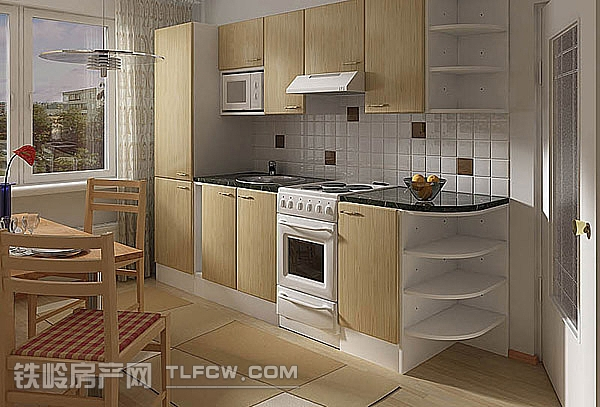
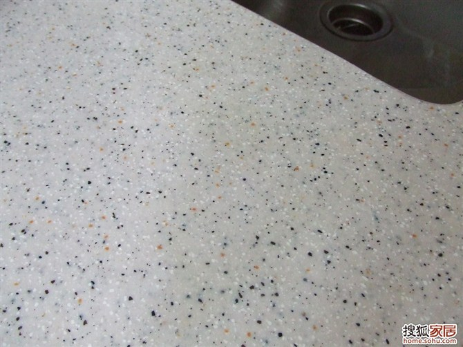
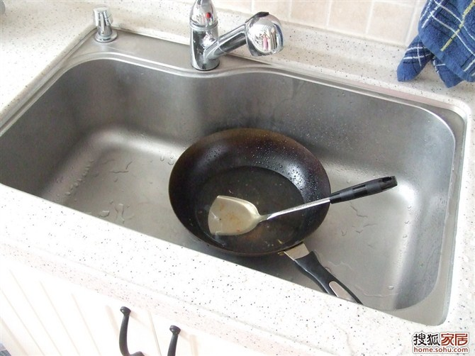
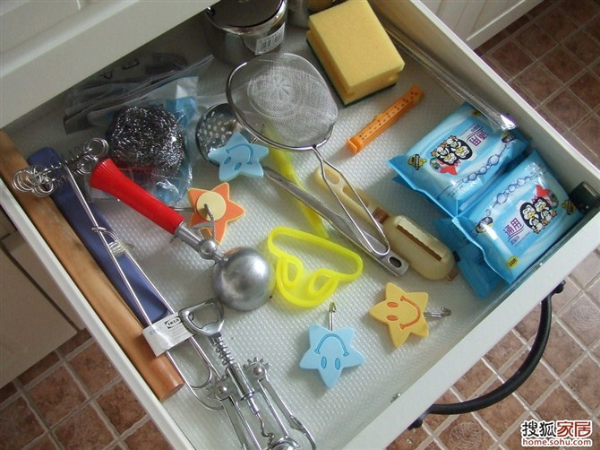
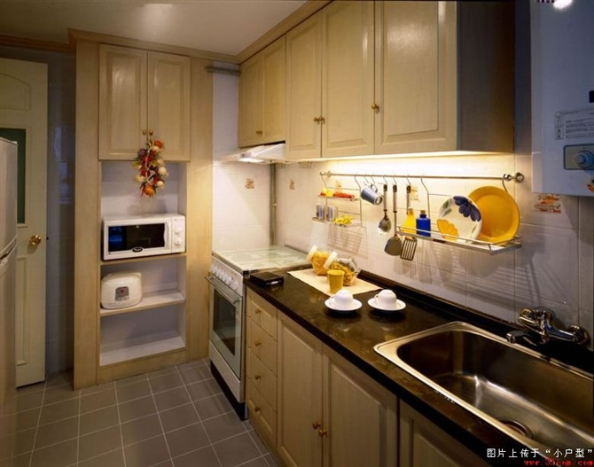
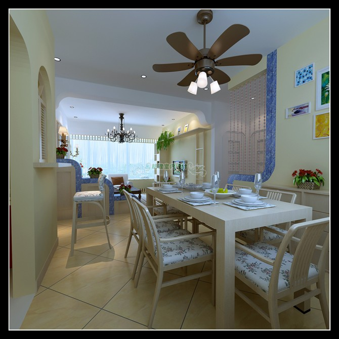

fitment
装修
- 实木地板脚感好，但是要保养
- 隐形门中看不中用
- 敞开式的书架或者储物架，要考虑积灰
- 灯不要朝上的，会积灰
- 安装漏电保护器和空气开关的分线盒，要放在室内，用好的
- 地板选择实木或者符合，会对应打地笼和找平的开销
- 走线时要想好空调位，将电源尽量移近空调，免得装空调时看到一截电源线，留下一丝遗憾。
- 亲自量度并记录房屋内可供使用的各个尺寸，可将楼书户型图上尺寸遮盖然后重新引线标注，最终的尺寸将直接影响装修设计和家具的购买。
- 对已经看好的家具最好把尺寸记下来，然后到房里虚拟将来的摆设情况
- 购买东西时必要的单据一定要保存好，此举对后期可能存在的退、换货情况绝对有益。特别是一些重要物品的购物小票、说明书等，因为好多东西是有保修期的，凭证丢了会比较麻烦。
- 买东西要考虑好门的大小，别搬不进去
- 别让漆掉到地板地砖上
地板 http://www.zhihu.com/question/20721677
Xu Meng的经验
1.如果卧室不打算吊顶，不要让水电工留电线在顶面，顶面也是可以开槽的。 2.卫生间预留柜前灯电线高度要注意，有些柜子高度不高的，让水电工尽量留低不留高，电工给我家偷懒，留了个两米高:( 3.做橱柜的时候注意问清上柜的高度，是否需要做到顶，如果不做到顶，注意贴砖。如果做到顶，要加多少钱？他默认报的价钱的高度一般都会比顶低个几公分，然后交了定金去量房就开始让你加钱 4.橱柜后面贴差砖，30块一个平方，可以省七八个平方的钱呢，可以试试买好砖的时候和卖家要一些差砖，会有送的。 5.窗台石门槛石提前去问好，你可以让装修公司先把铺设费用写为0，说可能让卖家安装。然后自己跟泥工结算。装修公司45块钱一米，泥工最多30.窗台门槛加起来也能便宜两百。 6.如果想做石膏线，自己找，10块钱一米包安装，装修公司也是市场找的，转手就是14块一米。不过这东西真是没什么用，一般都是水电工偷懒留了线无奈下做的。 7.装修方案上，没定下来的东西，先把单价写上，尺寸标上，数量填0.项目经理喜欢加项不喜欢减项，减项等着烦吧。特别是衣柜啊书柜啊什么的大项，减一个项目经理可是脸色尴尬噢。加的话，到时候跟木工商量，单价就可以商量啦，加点钱，就可以做到顶了。不过我建议衣柜买成品，好看，门和柜子配套，还未必比装修公司的贵。现在那种衣柜店都是来家里量了尺寸定做的，还可以做到顶，不像装修公司都是高度做到2.4的。就是材料会变成不是实木的，但是甲醛释放量是一样的E1级，稍微贵一点还有更环保的。我觉得环保就好，不一定要实木哦。实木指接板，味道也挺重的。 8.门套基础统统让填0，没有用，后面减又烦，还可能漏减了。 9.东西能自己买就自己买，地漏啊门啊，别让装修公司代买，代买肯定贵的。 10.如果有中央空调，问清楚，6平方的电线会不会单独加钱？ 11.设计师后面都会推荐你地砖上墙，方案时先问清楚地砖上墙加多少钱。 12.买成品门，有些地方门套厚度超过多少多少是要加钱的，要问清楚。门洞不标准最后也会加你钱，白色说不定又加你钱，下定金前都要问清楚。 13.做雨棚，到结算的时候居然说长度是包括两边弯进来边的，于是你以为两米的统统变成两米六，超级坏，前面问清楚算法。 14.多逛逛市场货比三家确实会便宜点，不过就是时间成本高一点，看自己怎么看了。逛市场还能发现团购信息。 15.我遇到的设计师收了钱就不怎么再更新图纸了。最好签正式合同前图纸让全画好。 16.设计师的预算里面，尺寸很多是不对的，很多墙面的尺寸大了不是一点点，有空的话，在最后算总帐的时候自己去量一下，把错误的尺寸差价全部要回来。 17.那些工人缺什么东西，都不会提前说，第二天要用了才说。所以每个工人进场的时候，仔细的问他们，有什么东西是需要业主提供的，先买好。要反复交代他们提早说。
厨房
- 烟道的阀门装回去之前，一定要擦干净，保证阀片能够开关自如并能开到最大，否则会影响油烟机的排烟效果。可以在装吊顶时留两条不装，等油烟机安装完并试用无误后再把吊顶装好
橱柜
- 要有足够的台面操作空间
- 不要单一，浅色的台面，太容易脏
- 备餐区略高，这样洗配不用弯腰
- 烹饪去略矮，这样炒菜不用架着胳膊
- 用大单盆，洗锅方便，不要双盆
- 用台下盆，清洗台面方便
- 要有个大高柜子，烤箱放中间，其他地方也很能纳物
- 前后挡水条都要有
- 要有一组抽屉，放些零碎的东西
- 一定要有开放的架子，调味料，蜂蜜，茶叶，放在外面要好很多
- 要有放葱姜蒜的地方
- 垃圾桶要藏起来，但是用着又要方便
- 沥水架不能少，最好不占用台面
- 照明问题要考虑好，备餐区和烹饪去要分开
- 插头要多留，多用带开关的，省得拔来拔去
- 小厨宝，垃圾处理器的开光不要留在橱柜里
- 插头尽量不要留在柜子里
- 拉篮200就够了，300太沉太累
- 调味品不要放在柜子里，放在离灶台近且开放的架子上
- 厨房不一定都是锅碗瓢盆，也可以适当装饰，有些情趣。
- 油烟机最好用侧吸的，效果好。
- 如果不是不烧饭的人家，厨房最好能装空调(中央空调就解决了)
- 烟道最好打出去，不然容易出现烟道的烟反流，别人家做饭你家也得开油烟 机。
- 房内各种插座的位置提前算好。
- 地板颜色要略浅，但是厨卫的瓷砖颜色略深些好，而且不要单色。
- 配台下盆龙头，龙头嘴要长些
- 龙头要用手背能开关的，不然会有油腻或者肥皂等等。
- 台面下面要有厚木板，这样才可以在这面剁肉什么的。
整体效果

橱柜角的处理

橱柜的面板是吸塑的 便宜+可造型 造型选弧线的，便于清洁

台面是人造石白桦林 麻点的禁脏，人造石可以做到无缝

水槽

大高柜子

抽屉



拉篮

沥水架


调味架

锅盖架

洗手间
- 梳妆台不要是玻璃的，容易脏，难打理。
- 五金件一分钱一分货，要买质量好的。
- 龙头装冷热水管。
- 毛巾架单杆的实用
- 可以考虑弄一个毛巾消毒柜，浴巾，毛巾，甚至内衣都可以消毒
- 拔出来洗头的龙头
- 地漏一定要验收检查好
- 装脸盆要考虑好和镜子以及牙刷架毛巾架的相对位置。
- 卫生间可钉点钉勾或者装衣勾用来挂点东西的
- 瓷砖勾缝不该用白水泥勾。没有一个月就变成黑缝，难看死了。结果自己买了勾缝剂自己勾，那个累
- 如果地漏原来生产商或者发展商已经装了那种防臭的“碗”，千万别取出来。
- 卫生间地面瓷片贴好后就试水，如果流水比较缓慢就立即返工
- 买镜子时考虑一下镜前灯的位置，如果暂时不想装镜前灯，镜子的大小要能遮住为镜前灯预留的线最好。
- 一定要盯着楼上做防水….不然楼上往下滴水，弄的吊柜，墙面一片狼藉
- 卫生间给你留的线路够不够多。以后要装灯，换气，取暖器，万一镜柜还有灯，还有抽水马桶边上有插头。线路越多越好。
客厅
- 电视背景墙一定多设几个插座，电视，DVD….一摆上，就会发现插座不够用
餐厅

- 餐厅最好装个小吊扇，各种用处，夏天吃饭凉的快，还可以吹凉面条等等。
- 喜欢吃火锅的，留个插座位置插电磁炉
- 餐桌旁有个小柜子很好
阳台
- 阳台的墙面最好用瓷砖，比涂料防水。
- 晾衣架可以多选择下，价格水份很大
主卧

- 床头一定要有开关，不然冬天。。。
次卧
tatami


- 床的下面可以装个启动架，一扳就弹起来露出储物箱那种